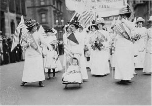

Why is Feminism Important?
 Women have the right to participate in political processes that affect them, their families, and their societies. Countries with increased women’s participation and leadership in civil society and political parties tend to be more inclusive, responsive, egalitarian, and democratic. When women meaningfully participate in peace processes, they can help to expand the scope of agreements and improve the prospects for durable peace.
Yet, women around the world are still largely absent from national and local decision-making bodies; struggle to have a voice in peacebuilding transitions; and are excluded from political processes. Despite representing half the global population, women comprise less than 20 percent of the world’s legislators. From discrimination and violence to a lack of support and resources, women face countless challenges to participation in the civic and political life of their countries.
Strengthening women’s rights and addressing barriers to political participation are critical to achieving gender equality and female empowerment. That’s why we’re supporting women around the world by:
- Providing training for female members of political parties and parliaments and supporting the development of women’s caucuses.
- Providing skill building and leadership training for women civil society members, women’s organizations, and female journalists.
- Supporting women’s participation in political and post-conflict transitions.
- Improving women’s access to justice and increasing women’s participation and representation in the justice sector.
- Supporting local efforts to advocate for legal rights that enable women to participate fully in the political and economic life of their societies.
- Building capacity for civil society organizations to advocate for women’s participation in political transitions and governance processes.